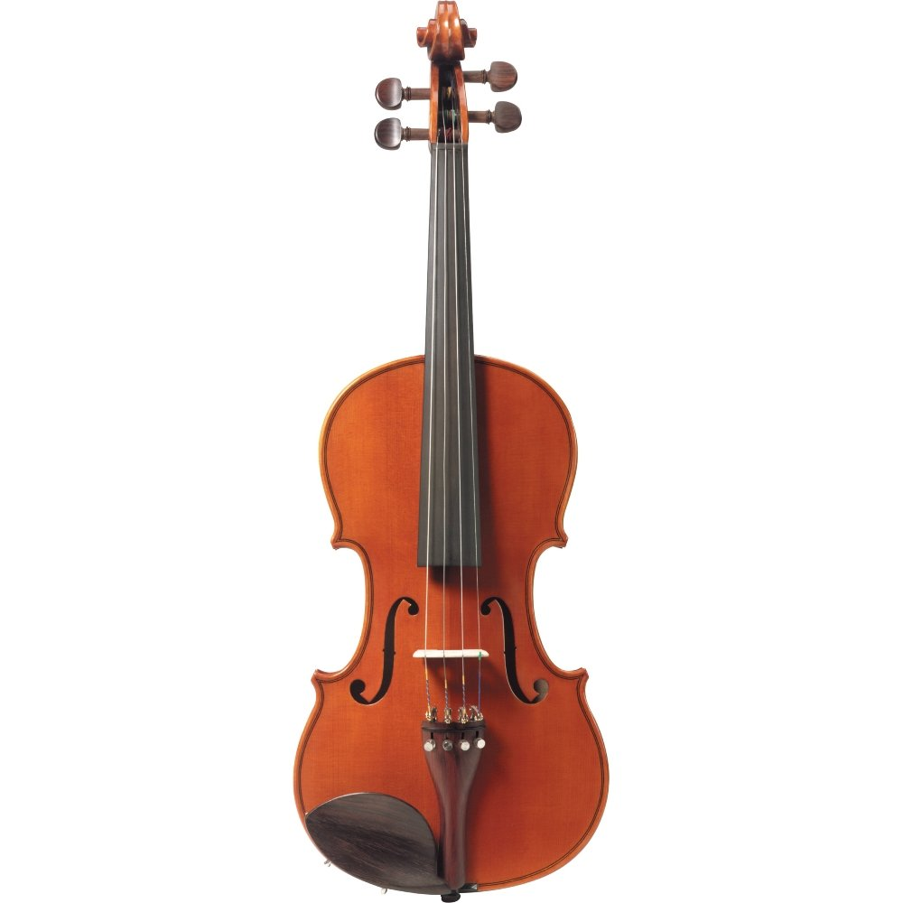

Some of the earliest stringed instruments have been identified in archaeological digs of Ancient Mesopotamian sites, which include artifacts over three thousand years old. Lyre instruments with wooden bodies, and strings used for plucking or playing with a bow represent key instruments that point towards later harps and violin type instruments; moreover, Indian instruments from 500 BC have been discovered with anything from 7 to 21 strings. When you look at a string instrument, the first thing you'll probably notice is that it's made of wood, so why is it called a string instrument? The bodies of the string instruments, which are hollow inside to allow sound to vibrate within them, are made of different kinds of wood, but the part of the instrument that makes the sound is the strings, which are made of nylon, steel or sometimes gut. The strings are played most often by drawing a bow across them. The handle of the bow is made of wood and the strings of the bow are actually horsehair from horses' tails! Sometimes the musicians will use their fingers to pluck the strings, and occasionally they will turn the bow upside down and play the strings with the wooden handle.
Brass instruments have been around for a long time. Some of the earliest examples of brass instruments were straight trumpets made of wood, bronze and silver, such as the salpinx found in Greece and the Roman tuba, lituus and buccina. Other early brass instruments were horns made of bronze or animal horns. The Scandinavian lur was one such instrument, as was the Roman, cornu. The shofar is an ancient Hebrew brass instrument made of a ram’s horn, which is still used in Jewish ceremonies today.

The very first woodwind instrument dates back to more than 43,000 years ago. To put that in perspective, humanity did not start farming and domesticating animals until 12,000 years ago. Needless to say, woodwind instruments were among the first tools created by humanity. The instruments in this family all used to be made of wood, which gives them their name. Today, they are made of wood, metal, plastic or some combination. They are all basically narrow cylinders or pipes with holes, an opening at the bottom end and a mouthpiece at the top. You play them by blowing air through the mouthpiece (that's the "wind" in "woodwind") and opening or closing the holes with your fingers to change the pitch. Metal caps called keys cover the holes of most woodwind instruments.
Drums can be found in history predating 6000 B.C. and these instruments have been a part of a wide variety of theater performances. The first drums were very rudimentary in nature, involving any items that could be hit to make a sound. Slowly, drums changed and became more detailed. With a strong connection to sacred and ceremonial celebrations in Africa, percussion instruments often symbolize tribal royalty and they have also been used to send messages over long distances. During the Renaissance period in Europe, drums played an important role in the military enabling soldiers to send coded messages and instructions to each other across many miles. The percussion section uses a great range of instruments. Most of the musicians in the section move from instrument to instrument and can play several during any one piece. These instruments include cymbals, gongs, xylophones, tubular bells and a variety of drums. Timpani drums are the most common percussion instruments in the orchestra and the only ones which require a specialist player.